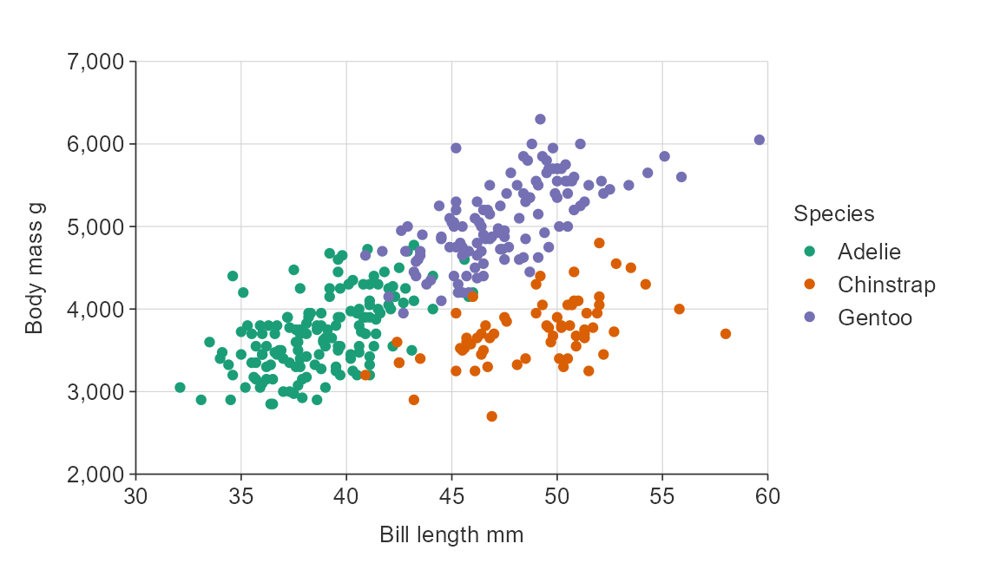
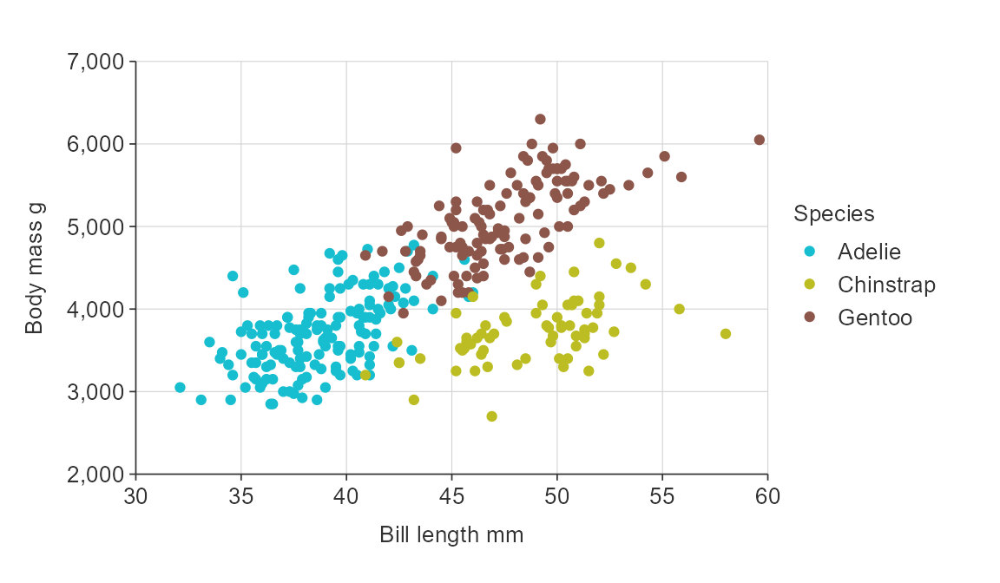
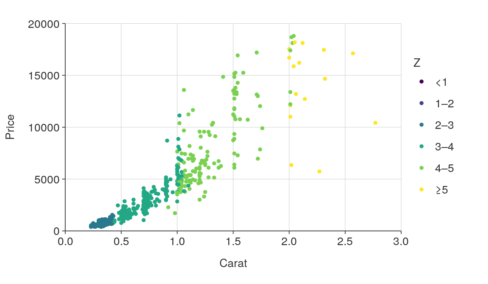
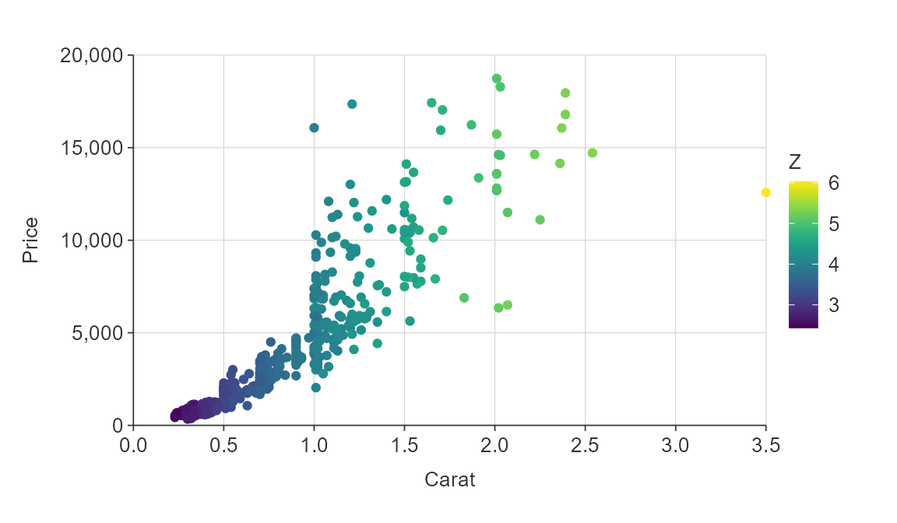
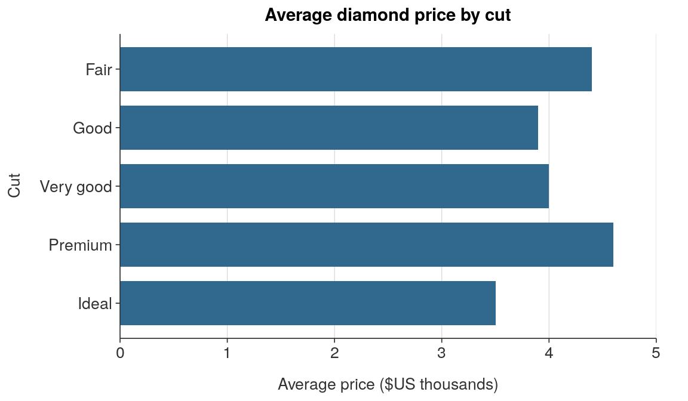
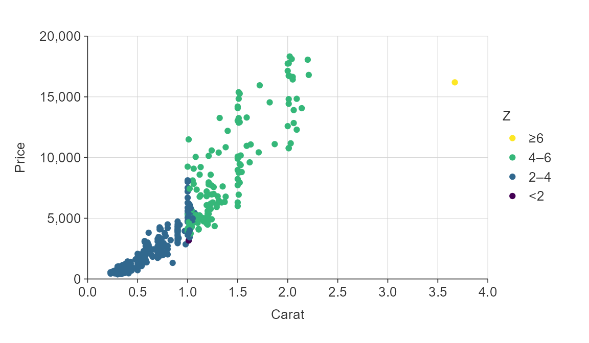
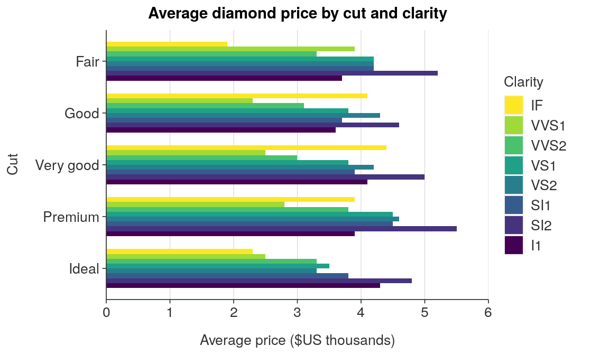

Overview
In simplevis, users define the following to adjust colours:
- a
palargument of which colours to use - a
col_varargument of which variable is to be mapped to colours within an_colfunction - an
alphaargument of what the opacity of the fill of colours within polygons is to be - If the
col_varis numeric, thecol_methodofbinorquantile, and thecol_cutsto use.
2. Defining the pal to adjust which colours to use
The colour palette can be changed from the default viridis colours by providing a character vector of hex codes to the pal argument.
ggplot_point(iris, Sepal.Width, Sepal.Length, pal = "#e7298a")
Users can get access to a large amount of colour palettes through the pals package.
2. Defining a col_var to map a variable to colours within an _col function
To colour by a variable, use a _col function
ggplot_point_col(iris, Sepal.Width, Sepal.Length, Species,
pal = c("#1B9E77", "#D95F02", "#7570B3"))
3. Defining the alpha to adjust the opacity of the fill of polygons.
Emphasis can be given to the outline of polygons by using an alpha argument to add opacity to the fill of polygons.
plot_data <- ggplot2::diamonds %>%
mutate(cut = stringr::str_to_sentence(cut)) %>%
mutate(cut = factor(cut, levels = c("Fair", "Good", "Very good", "Premium", "Ideal"))) %>%
group_by(cut) %>%
summarise(average_price = round(mean(price) / 1000, 1))
plot_data
#> # A tibble: 5 x 2
#> cut average_price
#> <fct> <dbl>
#> 1 Fair 4.4
#> 2 Good 3.9
#> 3 Very good 4
#> 4 Premium 4.6
#> 5 Ideal 3.5
ggplot_hbar(plot_data, average_price, cut, alpha = 0.25)
4. If colouring by a numeric variable, defining the col_method and col_cuts
All simplevis _col functions provide for colouring by a categorical variable.
In addition, sf and point functions provide for colouring by a numeric variable.
You do this by specifying whether you want to do this by:
- defining whether the col_method is to be by
binorquantile - defining a vector or col_cuts. These should be between 0 and infinity (
Inf) forbinand between 0 and 1 forquantile
plot_data <- ggplot2::diamonds %>%
slice_sample(prop = 0.01)
plot_data
#> # A tibble: 539 x 10
#> carat cut color clarity depth table price x y z
#> <dbl> <ord> <ord> <ord> <dbl> <dbl> <int> <dbl> <dbl> <dbl>
#> 1 0.54 Very Good F VVS2 60.2 59 2198 5.27 5.3 3.18
#> 2 1 Premium F SI1 59.3 60 4939 6.61 6.57 3.91
#> 3 1.58 Premium H SI1 61.5 59 10738 7.47 7.45 4.59
#> 4 1.51 Very Good E SI1 62.9 62 9474 7.21 7.31 4.57
#> 5 0.42 Ideal G SI1 62.9 54 945 4.81 4.79 3.02
#> 6 0.27 Ideal F IF 61.8 55 760 4.14 4.21 2.57
#> 7 0.52 Ideal E SI2 62.9 56 1290 5.12 5.08 3.21
#> 8 0.9 Very Good I SI1 60.5 58 3220 6.22 6.27 3.78
#> 9 0.7 Fair G VS2 66.5 57 2575 5.4 5.46 3.61
#> 10 0.37 Very Good E VS1 60.2 56 925 4.68 4.71 2.83
#> # ... with 529 more rows
ggplot_point_col(plot_data,
x_var = carat,
y_var = price,
col_var = z,
col_method = "quantile",
col_cuts = c(0, 0.25, 0.5, 0.75, 1))
ggplot_point_col(plot_data,
x_var = carat,
y_var = price,
col_var = z,
col_method = "bin",
col_cuts = c(0, 1, 2, 3, 4, 5, Inf))
ggplot_sf_col(example_sf_polygon,
col_var = density,
col_method = "bin",
col_cuts = c(0, 10, 50, 100, 150, 200, Inf),
col_labels_dp = 0)
simplevis colouring vs ggplot2
simplevis unites two ggplot2 concepts into one to make things simpler for users:
- the colouring of points and lines (including outlines)
- the colouring of the fill of polygons
These concepts are referred to as the col and the fill in ggplot2. So geom_point uses col and geom_bar uses fill (and col).
To map colours to a variable:
- In
simplevis: use a_colfunction and specify thecol_var - In
ggplot2: add acoland/orfillargument withinaesto the relevantgeomlayer
To select colours to use:
- In
simplevis: usepalargument and specify a vector of colours - In
ggplot2: if no variable is not mapped to colours, then provide a vector of colours to fill and/or col arguments within thegeomlayer. Otherwise, if a variable is mapped to colours, then provide a vector of colours the values argument withinscale_fill_manualand/orscale_colour_manual.
plot_data <- ggplot2::diamonds %>%
mutate(cut = stringr::str_to_sentence(cut)) %>%
mutate(cut = factor(cut, levels = c("Fair", "Good", "Very good", "Premium", "Ideal"))) %>%
group_by(cut) %>%
summarise(average_price = round(mean(price) / 1000, 1))
plot_data
#> # A tibble: 5 x 2
#> cut average_price
#> <fct> <dbl>
#> 1 Fair 4.4
#> 2 Good 3.9
#> 3 Very good 4
#> 4 Premium 4.6
#> 5 Ideal 3.5
ggplot_hbar(plot_data, average_price, cut,
pal = viridis::viridis(4)[2], # in simplevis, pal is always a vector of colours
title = "Average diamond price by cut and clarity",
x_title = "Average price ($US thousands)",
y_title = "Cut")
ggplot(plot_data) +
geom_bar(aes(x = average_price, y = fct_rev(cut)),
stat = "identity",
fill = viridis::viridis(4)[2], # in ggplot2, fill is a vector of colours when outside of aes
width = 0.75) +
scale_x_continuous(expand = c(0, 0), limits = c(0, 5)) +
labs(title = "Average diamond price by cut",
x = "Average price ($US thousands)",
y = "Cut") +
simplevis::theme_hbar() 
plot_data <- ggplot2::diamonds %>%
mutate(cut = stringr::str_to_sentence(cut)) %>%
mutate(cut = factor(cut, levels = c("Fair", "Good", "Very good", "Premium", "Ideal"))) %>%
group_by(cut, clarity) %>%
summarise(average_price = round(mean(price) / 1000, 1))
plot_data
#> # A tibble: 40 x 3
#> # Groups: cut [5]
#> cut clarity average_price
#> <fct> <ord> <dbl>
#> 1 Fair I1 3.7
#> 2 Fair SI2 5.2
#> 3 Fair SI1 4.2
#> 4 Fair VS2 4.2
#> 5 Fair VS1 4.2
#> 6 Fair VVS2 3.3
#> 7 Fair VVS1 3.9
#> 8 Fair IF 1.9
#> 9 Good I1 3.6
#> 10 Good SI2 4.6
#> # ... with 30 more rows
ggplot_hbar_col(plot_data, average_price, cut, col_var = clarity, # in simplevis, the col_var is the same as the fill/col within an aes in ggplot2
pal = viridis::viridis(8), # in simplevis, pal is always a vector of colours
position = "dodge",
title = "Average diamond price by cut and clarity",
x_title = "Average price ($US thousands)",
y_title = "Cut")
ggplot(plot_data) +
geom_bar(aes(x = average_price, y = fct_rev(cut), fill = clarity), # in ggplot2, fill inside an aes is the same as the col_var in simplevis
stat = "identity",
position = "dodge",
width = 0.75) +
scale_x_continuous(expand = c(0, 0), limits = c(0, 6)) +
scale_fill_manual(values = viridis::viridis(8)) + # in ggplot2, the colours when fill is inside an aes are specified as a vector in scale_fill_manual
guides(fill = guide_legend(rev = TRUE)) +
labs(title = "Average diamond price by cut and clarity",
x = "Average price ($US thousands)",
y = "Cut",
fill = NULL) +
simplevis::theme_hbar() 